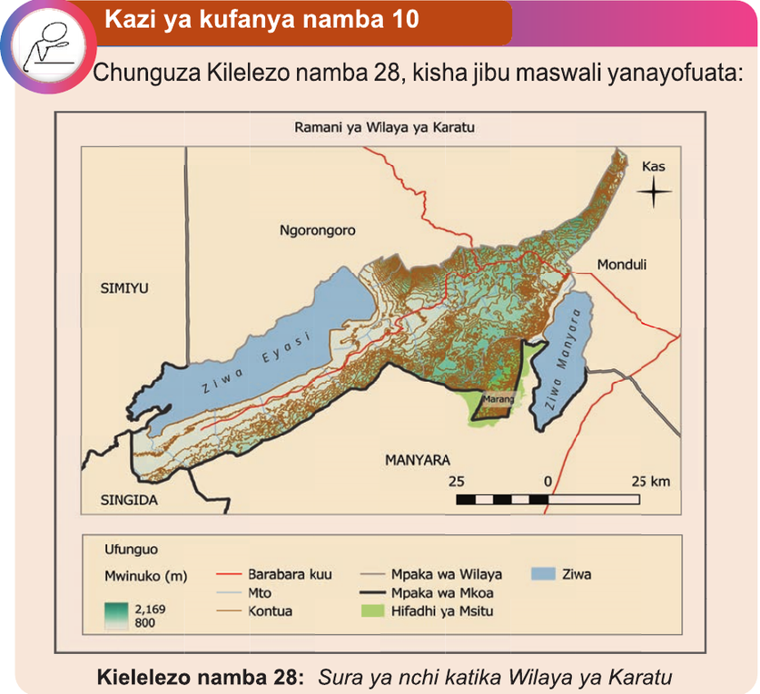

Kwa ujumla, unapotumia ramani, ili kutambua sura ya nchi katika eneo fulani, zingatia rangi au mistari ya kontua.
Kuelewa sura ya nchi ni muhimu kwa sababu mbalimbali, kama vile kuchagua eneo la ujenzi na kufahamu kuhusu mazingira.
Kazi ya kufanya namba 10
Chunguza Kielelezo namba 28, kisha jibu maswali yanayofuata:
Ramani ya Wilaya ya Karatu

Maswali
1. Baini maumbo ya sura ya nchi yaliyoomo katika ramani.
2. Shughuli gani za kiuchumi zinaweza kufanyika katika maumbo ya sura ya nchi uliyo yabaini.
3. Bainisha alama zilizotumika katika ramani kuwakilisha maumbo ya sura ya nchi.